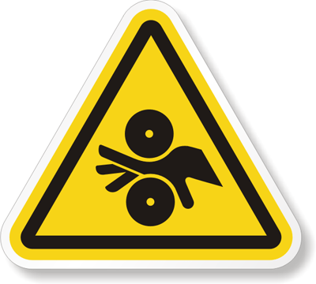
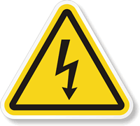
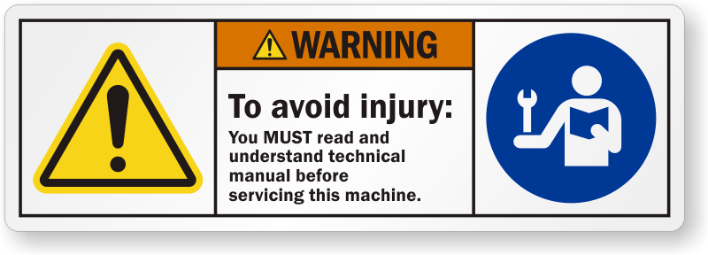

Safety¶
Safety is extremely important to Fetch Robotics. Safe operation of robots is important yet challenging and it is important to remember that safety is a continual process that is shared by the robot designer, operator, and administrator. The following section provides an overview of the issues, safety-related design features, and a basic set of guidelines to support safety when using the Fetch and Freight R&D robots.
Safety Overview¶
When operating Fetch and Freight R&D robots users should always be conscious of safety. Remember the robots are heavy pieces of equipment and have moving parts. As the robots travel through an environment they can carry and manipulate a wide variety of objects. Since the Fetch & Freight R&D robots are for applications development, their moves and actions may not be entirely predictable. Both the Fetch and Freight robots can cause significant damage if they fall on or run into a person. There are also several ways that the robots can pinch, grab, or twist fingers or other body parts (these regions are labeled). Fetch can also manipulate dangerous objects and knock over heavy objects. People should always be cautious and attentive around Fetch and Freight R&D robots.
Design Features¶
While retaining the power of a R&D platform, both the hardware and software of Fetch and Freight are designed to minimize risk. The exterior of both Fetch and Freight clearly mark regions that could pinch or injure while mechanism is in motion or being moved by hand. Both Fetch and Freight have emergency stop buttons in case there is a need to immediately stop the motion of the robot.
In software, low-level safety limits have been incorporated to limit motor current, motor velocity, range of joint motion, and trajectory deviations. High-level applications also integrate the various on-board sensors to avoid obstacles when navigating or moving the arm.
These design features help make Fetch and Freight more robust. However a R&D robot is never absolutely safe. The application developers’ safety, as well as the safety of others, depends on the developers’ constant attention. It is important for the user to be aware of potential dangers and learn to anticipate and prevent problems.
General Usage Guidelines¶
While many guidelines for safe use of a robot stem from common sense, a basic set is listed below. It is important to follow these guidelines, but please note that these guidelines alone do not guarantee safety, only reduce risk.
Before operating or working with a Fetch or Freight each user must:
Watch the safety video.
Read this user manual, specifically the entirety of Section 2 on Safety.
Supervise children, visitors, and anyone who has not followed the previous guideline. In particular, make sure they:
Do not come in range of Fetch or Freight R&D robots when active.
Are aware that the robot could move unexpectedly and is potentially dangerous.
Are not alone with Fetch or Freight.
Do not operate Fetch or Freight.
Maintain a safe environment. Safety is not only impacted by how a developer operates a robot, but the environment as well. The Fetch and Freight R&D robots are designed to operate in laboratory environments.
Keep the robots at least 5 meters from the top of a stairway or any other drop off.
Make sure the robots have adequate and level space for any expected or unexpected operation.
If Fetch travels on a ramp, make sure that the spine is lowered and the arm is tucked so that the center of gravity is as low as possible. The slope of the ramp should not exceed 1:12. Also make sure that the robot cannot drive off the edge of the ramp.
Make sure the environment is free of objects that could pose a risk if knocked, hit, or otherwise affected by the robots.
Make sure that there are no ropes or cables that could get caught in the covers, wheels, or arm.
Make sure that no animals are near the robots.
Keep fingers, hair, and clothing away from wheels, gears, and any location marked as a potential pinch point.
Be aware of the location of emergency exits and ensure that the robots cannot block them.
Do not operate the robots outdoors.
The Fetch and Freight covers are flame-retardant. However keep the robots away from open flames. Never use the robots around stoves or ovens.
Do not allow the robot to come in contact with liquids (spilled drink, rain, etc.) If the robots do get wet, turn off the breaker switch at the back of the robot and contact Fetch Robotics.
Before removing any covers, the robot should be unplugged and the breaker switch at the back of the robot should be off.
Make sure that the power cord is in good condition. Cord insulation must be intact with no crack or deterioration. Both connectors should be undamaged. If the power supply is damaged in anyway, it should be discarded and replaced with a new one from Fetch Robotics.
Do not run the robot without its covers, the covers help to protect users from internal mechanism pinch points and potential electrical shock.
Use common sense when operating the Fetch and Freight R&D robots.
Do not allow the robots to grab or hit any person.
Do not allow the robots to drive into contact with, or over, any body part.
Do not allow the robot to interact with any sharp or dangerous items.
Do not allow the robot to operate potentially dangerous appliances (like stoves) or power tools.
Pay attention to the warning labels on the robots.
Warning
Do not modify or remove any part of the software safety features
Warning Labels¶
Below are pictures of all the warning labels that can be found on the robot and associated safety issue.
Pinch Point¶
{kind=link}

There are several pinch point warning labels on the robot. The labels mark the regions of the robot that could cause injury to hands or finger while moving. It is important to hit the run stop immediately if a finger or hand becomes trapped in a pinch point.
Electrical Shock¶
{kind=link}

The electrical shock labels mark regions of the robot that could cause electrical shock if damaged or wet. If the water enters the battery compartment of the robot or the power intlet connector, do not continue operating the robot. Shut the robot down and turn of the robot using the power disconnect switch on the back of the robot. Then contact Fetch Robotics support.
Laser Beam¶
{kind=link}
The laser beam warning label is to remind the user that there is an active laser scanner in the robot. The laser scanner is a class 1 laser scanner and is eye safe under all normal operating conditions. However it is important to note that incorrect use can lead to the user being exposed to dangerous radiation. If the laser housing is damaged on the robot do not continue using the robot or look directly into the laser beam region.
Read The Manual¶
{kind=link}

Read the manual stickers are found beneath the skins of the robot. It is important for the user to read the manual and other maintenance documents before attempting to repair or perform maintenance on the robot.